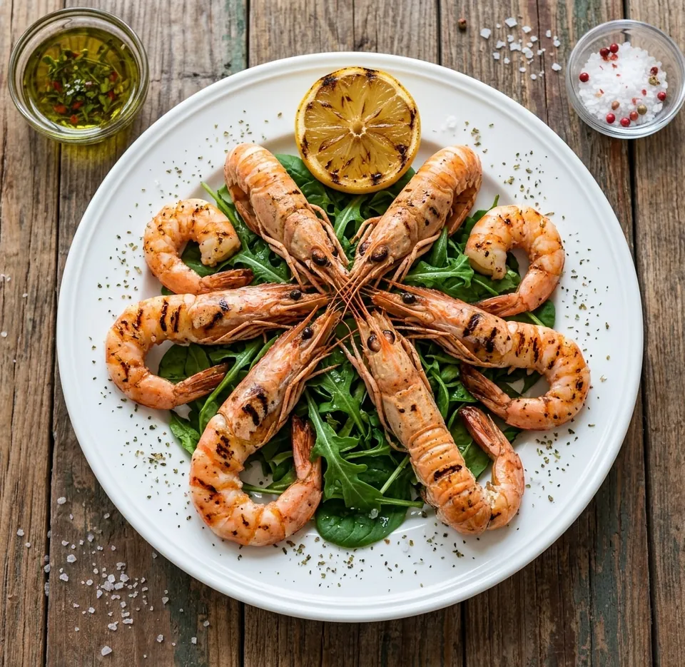
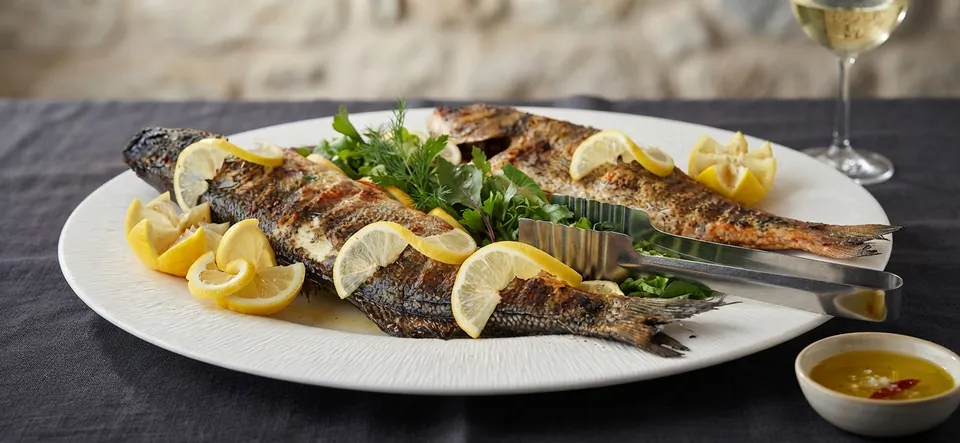
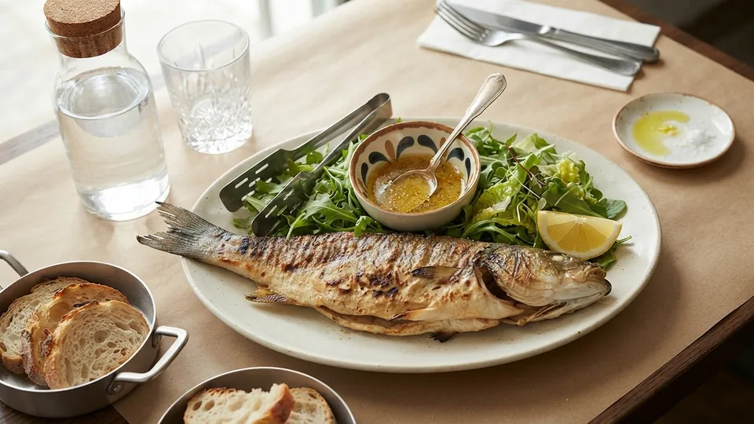
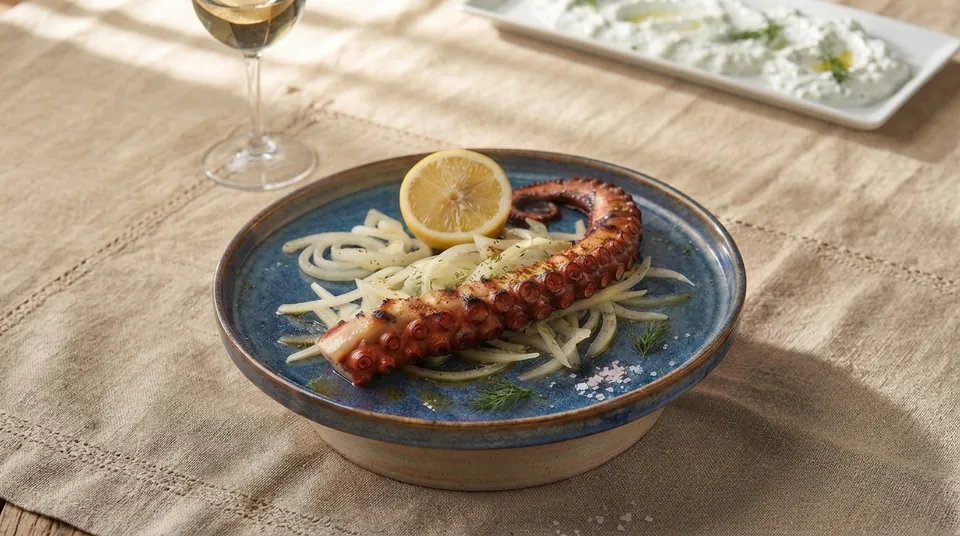
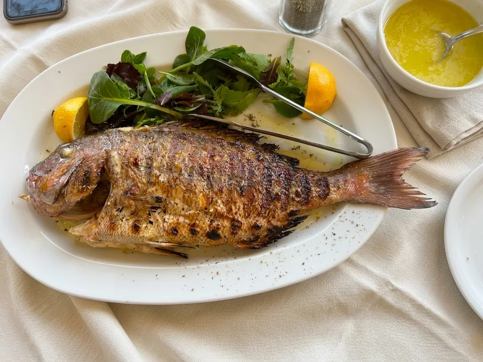
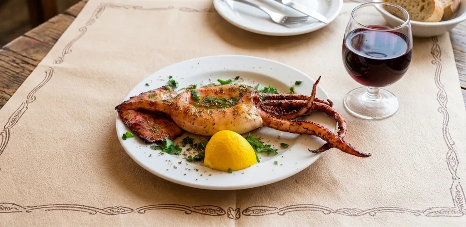

From the Grill
Simply Prepared
A closer look at the grill, whole fish and favourites, cooked simply over the coals with carefully selected ingredients and the unmistakable character of proper grilling.





